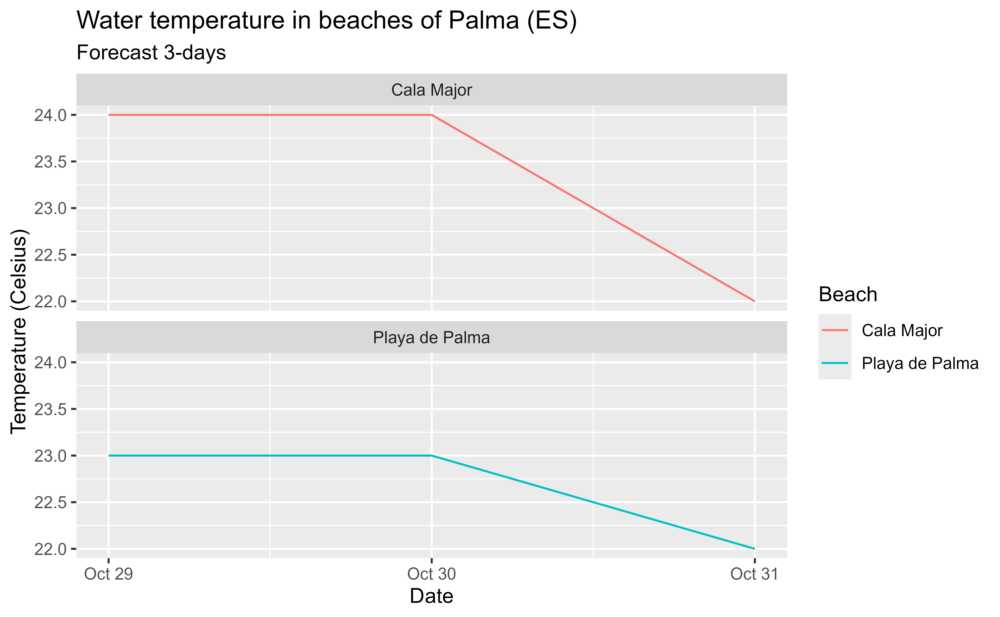

Get a database of daily weather forecasts for a beach. Beach database can
be accessed with aemet_beaches().
Usage
aemet_forecast_beaches(
x,
verbose = FALSE,
return_sf = FALSE,
extract_metadata = FALSE,
progress = TRUE
)Arguments
- x
A vector of beaches codes to extract. See
aemet_beaches().- verbose
Logical
TRUE/FALSE. Provides information about the flow of information between the client and server.- return_sf
Logical
TRUEorFALSE. Should the function return ansfspatial object? IfFALSE(the default value) it returns a tibble. Note that you need to have the sf package installed.- extract_metadata
Logical
TRUE/FALSE. OnTRUEthe output is a tibble with the description of the fields. See alsoget_metadata_aemet().- progress
Logical, display a
cli::cli_progress_bar()object. Ifverbose = TRUEwon't be displayed.
API Key
You need to set your API Key globally using aemet_api_key().
See also
aemet_beaches() for beaches codes.
Other aemet_api_data:
aemet_alert_zones(),
aemet_alerts(),
aemet_beaches(),
aemet_daily_clim(),
aemet_extremes_clim(),
aemet_forecast_daily(),
aemet_forecast_fires(),
aemet_last_obs(),
aemet_monthly,
aemet_normal,
aemet_stations()
Other forecasts:
aemet_forecast_daily(),
aemet_forecast_fires(),
aemet_forecast_tidy()
Examples
# Forecast for beaches in Palma, Mallorca
library(dplyr)
library(ggplot2)
palma_b <- aemet_beaches() |>
filter(ID_MUNICIPIO == "07040")
forecast_b <- aemet_forecast_beaches(palma_b$ID_PLAYA)
glimpse(forecast_b)
#> Rows: 6
#> Columns: 36
#> $ elaborado <dttm> 2026-02-18 08:50:18, 2026-02-18 08:50:18, 20…
#> $ id <chr> "0704001", "0704001", "0704001", "0704007", "…
#> $ localidad <chr> "07040", "07040", "07040", "07040", "07040", …
#> $ fecha <date> 2026-02-18, 2026-02-19, 2026-02-20, 2026-02-…
#> $ nombre <chr> "Cala Major", "Cala Major", "Cala Major", "Pl…
#> $ estadoCielo_value <lgl> NA, NA, NA, NA, NA, NA
#> $ estadoCielo_f1 <int> 100, 100, 100, 100, 100, 100
#> $ estadoCielo_descripcion1 <chr> "despejado", "despejado", "despejado", "despe…
#> $ estadoCielo_f2 <int> 120, 100, 110, 120, 100, 110
#> $ estadoCielo_descripcion2 <chr> "muy nuboso", "despejado", "nuboso", "muy nub…
#> $ viento_value <lgl> NA, NA, NA, NA, NA, NA
#> $ viento_f1 <int> 210, 230, 230, 210, 220, 220
#> $ viento_descripcion1 <chr> "flojo", "fuerte", "fuerte", "flojo", "modera…
#> $ viento_f2 <int> 210, 230, 210, 210, 230, 210
#> $ viento_descripcion2 <chr> "flojo", "fuerte", "flojo", "flojo", "fuerte"…
#> $ oleaje_value <lgl> NA, NA, NA, NA, NA, NA
#> $ oleaje_f1 <int> 310, 310, 310, 320, 320, 320
#> $ oleaje_descripcion1 <chr> "débil", "débil", "débil", "moderado", "moder…
#> $ oleaje_f2 <int> 310, 310, 310, 320, 320, 310
#> $ oleaje_descripcion2 <chr> "débil", "débil", "débil", "moderado", "moder…
#> $ tMaxima_value <lgl> NA, NA, NA, NA, NA, NA
#> $ tMaxima_valor1 <int> 18, 18, 16, 18, 18, 17
#> $ sTermica_value <lgl> NA, NA, NA, NA, NA, NA
#> $ sTermica_valor1 <int> 440, 440, 440, 440, 440, 440
#> $ sTermica_descripcion1 <chr> "fresco", "fresco", "fresco", "fresco", "fres…
#> $ tAgua_value <lgl> NA, NA, NA, NA, NA, NA
#> $ tAgua_valor1 <int> 15, 13, 13, 16, 14, 14
#> $ uvMax_value <lgl> NA, NA, NA, NA, NA, NA
#> $ uvMax_valor1 <int> 3, 2, 3, 3, 2, 3
#> $ tagua_value <lgl> NA, NA, NA, NA, NA, NA
#> $ tagua_valor1 <int> 15, 13, 13, 16, 14, 14
#> $ tmaxima_value <lgl> NA, NA, NA, NA, NA, NA
#> $ tmaxima_valor1 <int> 18, 18, 16, 18, 18, 17
#> $ stermica_value <lgl> NA, NA, NA, NA, NA, NA
#> $ stermica_valor1 <int> 440, 440, 440, 440, 440, 440
#> $ stermica_descripcion1 <chr> "fresco", "fresco", "fresco", "fresco", "fres…
ggplot(forecast_b) +
geom_line(aes(fecha, tagua_valor1, color = nombre)) +
facet_wrap(~nombre, ncol = 1) +
labs(
title = "Water temperature in beaches of Palma (ES)",
subtitle = "Forecast 3-days",
x = "Date",
y = "Temperature (Celsius)",
color = "Beach"
)
